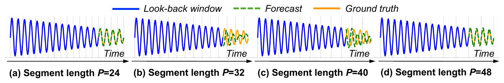
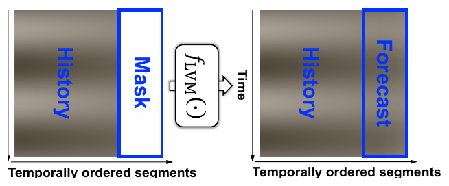
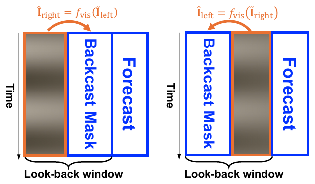
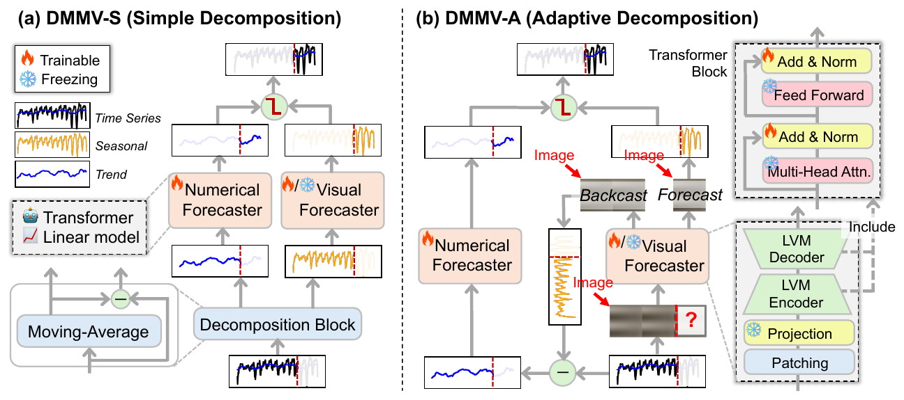
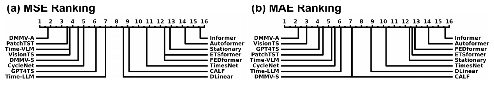
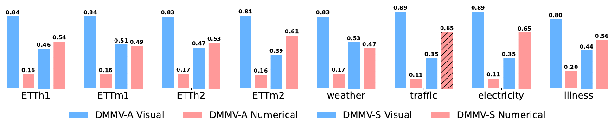
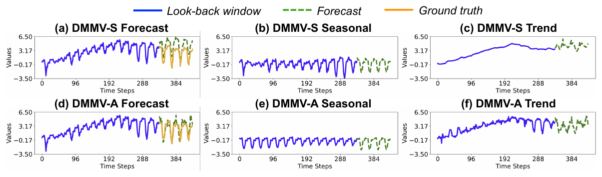
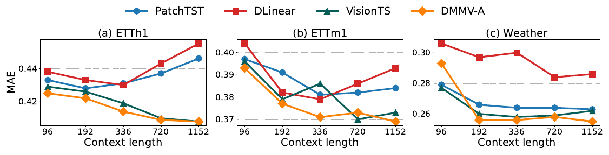

Multi-Modal View Enhanced Large Vision Models
for Long-Term Time Series Forecasting
ChengAo Shen1, Wenchao Yu2, Ziming Zhao1, Dongjin Song3, Wei Cheng2, Haifeng Chen2, Jingchao Ni1
1University of Houston 2NEC Laboratories America 3University of Connecticut
Time series, typically represented as numerical sequences, can also be transformed into images and texts, offering multi-modal views (MMVs) of the same underlying signal. These MMVs can reveal complementary patterns and enable the use of powerful pre-trained large models, such as large vision models (LVMs), for long-term time series forecasting (LTSF).
However, as we identified in this work, the state-of-the-art LVM-based forecaster poses an inductive bias towards “forecasting periods”. To harness this bias, we propose DMMV, a novel decomposition-based multi-modal view framework that leverages trend-seasonal decomposition and a novel backcast-residual based adaptive decomposition to integrate MMVs for LTSF.
Comparative evaluations against 14 SOTA models across diverse datasets show that DMMV outperforms single-view and existing multi-modal baselines, achieving the best mean squared error (MSE) on 6 out of 8 benchmark datasets.
Leveraging MMVs offers two key advantages: augmenting time series with alternative views can
reveal patterns not evident in the original numerical data, and pre-trained large models can
extract complex patterns specific to certain views, such as visual representations. DMMV
integrates numerical and visual views in a compact architecture. We exclude the textual view
due to its marginal gains in Time-VLM and recent doubts about the effectiveness
and cost-efficiency of LLMs for LTSF.
Masked autoencoder (MAE) is pre-trained self-supervisedly by reconstructing
masked image patches using the ImageNet dataset. To adapt it to LTSF, VisionTS
adopts a period-based imaging technique introduced by TimesNet: each length-T
univariate series is segmented into ⌊T/P⌋ subsequences of length P, where P is set to be the
period of the series, which can be obtained using the Fast Fourier Transform or from prior
knowledge on sampling frequency. The subsequences are stacked to form a 2D image. After
standard-deviation normalization, it is duplicated 3 times to form a gray image, followed by
a bilinear interpolation to resize it to an image of size 224 × 224 × 3 to fit the input
requirement of MAE. The forecast is achieved by reconstructing a right-appended
masked area of that image, corresponding to the future horizon of the series.
Due to period-based imaging and the spatial consistency enforced during MAE's
pixel inference, VisionTS exhibits a strong bias toward
inter-period consistency, often overshadowing the global trend. The panels
below illustrate VisionTS's forecasts on a synthetic sinusoidal time series with
a period of 24. As the segment length P varies from 24 to 48, forecasts alternate between
accurate and inaccurate as P shifts from 1×period to 2×period, highlighting a strong
inductive bias toward periodicity. Notably, the forecasts aren't mere repetitions — the
decreasing intra-period amplitude indicates that LVMs can still capture local trends within
each period.

The function of the synthetic time series is x(t) = A(t) · sin(2πt / P), where the period P is set to 24 and the amplitude function A(t) decreases linearly over time. The forecasts are more accurate when the segment length is a multiple of the period (e.g., 24, 48) than other values. In the table below, the fluctuations in MSEs and MAEs across different segment lengths other than 24 and 48 support the findings of the inductive bias toward “forecasting periods”.
Forecasting performance of an LVM with respect to varying segment length on the synthetic dataset. Lower MSE and MAE are better.
Motivated by this observation, we design the DMMV framework to leverage the inductive bias of LVMs while addressing their limitations. Specifically, the visual forecaster — the LVM — focuses on capturing periodic patterns from the visual view, while the numerical forecaster models global trends from the numerical view, resulting in more balanced forecasting.
DMMV-S simple decomposition. It adopts a simple moving-average decomposition, which explicitly decomposes an input time series into a trend part and a seasonal (or periodic) part, reflecting the long-term progression and the seasonality of the series, respectively. Moving-average uses a kernel — a sliding window — of length 2⌊P/2⌋ + 1 to extract the component with frequency lower than the series' sampling frequency, highlighting the global trend; the residual component is the seasonal part. The visual forecaster transforms the seasonal input into a 224 × 224 × 3 image and outputs the forecast for the seasonal component.
The numerical forecaster rather than imposing a specialized inductive bias, we adopt a
general-purpose architecture capable of capturing long-term dependencies. We investigate the
feasibility of two options and leave other explorations as a future work: a simple linear
model motivated by the proven effectiveness of linear methods in LTSF, and a
Transformer-based model inspired by PatchTST, which segments the trend into N
length-L patches, projects them to embeddings with a learnable positional encoding, and
passes the Transformer output through flatten and linear operators to achieve the forecast
for the trend part.
Gated late fusion finally, the seasonal and trend forecasts are merged to produce the
overall forecast for the variate. In particular, instead of using the regular
summation-based merge, we design an adaptive merge function with a light-weight gate
g = sigmoid(wg) ∈ [0, 1], where wg is a learnable scalar parameter.
DMMV employs late fusion via this gating mechanism, as intermediate fusion — at the
embedding level, say — underutilizes MAE's decoder, which plays a crucial role
in pixel prediction.
DMMV-A adaptive decomposition. One limitation of DMMV-S is the explicit trend-seasonal decomposition placed on the input, which will enforce the numerical and visual forecasters to fit pre-defined components extracted by a certain kernel size. This is not flexible and may not fully leverage LVMs' potential. Unlike DMMV-S, DMMV-A implicitly decomposes the input into trend and seasonal components tailored to the strengths of the numerical and visual forecasters, respectively. This is achieved via a backcast-residual mechanism that leverages LVMs' bias toward periodic patterns. The input is first transformed into an image using period-based imaging. Before forecasting, the visual forecaster is used to backcast the look-back window by reconstructing masked segments of that image.
BCMask an effective masking strategy must enable full-window reconstruction, align with the forecasting setup, and minimize the usage of the visual forecaster to avoid computational overhead. To meet these criteria, we propose an efficient BackCast-Masking (BCMask) strategy, which applies two passes: masking and reconstructing the left and right halves of the image, respectively. BCMask satisfies all three criteria: it enables full reconstruction of the image; it uses contiguous segments to predict adjacent segments, mirroring the forecasting process; and it minimizes the use of the visual forecaster — only two passes are needed, as some unmasked regions of the image are required for prediction and must later be masked to complete the full reconstruction.
The residual is the trend notably, the backcast image is biased toward the periodic
patterns in the input image. After de-normalization and reverse transformation, a backcast
time series is recovered, reflecting the periodic component in the input; the residual —
input minus backcast — therefore emphasizes the trend. We feed this residual into the
numerical forecaster to produce the trend forecast, while the visual forecaster predicts from
the input image, likely yielding the forecast of the seasonal component; the two are fused
via the same gating mechanism. Unlike the backcast in N-BEATS — designed merely
to extract predictive errors — our approach is specifically tailored to exploit LVMs' bias
toward periodic patterns, making it fundamentally different.
Optimization DMMV is trained by minimizing the MSE between the forecast and the ground
truth. The numerical forecaster is trained from scratch, while the visual forecaster uses
pre-trained LVM weights with partial fine-tuning. We find that fine-tuning only the
normalization layers yields the best performance. For the choice of LVM, we tested
MAE and SimMIM, both self-supervisedly pre-trained; MAE
performs better and is set as the default. Training begins with the visual forecaster frozen
while the numerical forecaster is trained for a number of epochs, around 30. Then the norm
layers of the visual forecaster are unfrozen and fine-tuned jointly with the numerical
forecaster until convergence or early stopping.



We adopt 8 widely used multivariate benchmarks: ETT — ETTh1, ETTh2, ETTm1, ETTm2 — together with Weather, Illness, Traffic and Electricity. Following standard protocols, we split the datasets chronologically into training/validation/test sets using a 60%/20%/20% ratio for ETT and 70%/10%/20% for the others. The prediction horizon is set to {24, 36, 48, 60} for Illness and {96, 192, 336, 720} for the remaining datasets. By default, the look-back window is 336. We use Mean Squared Error and Mean Absolute Error to evaluate the LTSF performance of the compared methods.
The table below summarizes the LTSF performance of 10 representative methods across four
categories: MMV-based, visual-view-based, language-view-based, and numerical-view-based
approaches. Time-VLM's results on the Illness dataset are not reported in its
paper and its code is unavailable at the time of this experiment, thus are marked by “—”.
For DMMV, the stronger variant, DMMV-A, is reported.
Several key insights emerge: MMV and visual-view methods generally outperform language-view
methods, underscoring the effectiveness of LVMs, particularly when integrated within MMV
frameworks; numerical-view models such as PatchTST and CycleNet
remain competitive, especially on datasets where VisionTS underperforms — ETTm2
and Electricity — highlighting their potential to complement visual models; the strong
results of CycleNet, a lightweight model with learnable decomposition,
demonstrate the value of combining simplicity with structure in LTSF; notably, DMMV-A, which
unifies visual and numerical views through a novel adaptive decomposition, outperforms the
baselines in most cases, achieving 43 first-places and confirming its effectiveness; and
lastly, while VisionTS performs well on highly periodic datasets such as ETTh1,
ETTm1 and Traffic due to MAE's inductive bias toward periodicity, DMMV-A
alleviates this bias, resulting in more generalizable forecasts.
Lower MSE and MAE are better. Views — Multi-Modal: DMMV-A, Time-VLM; Visual: VisionTS; Language: GPT4TS, Time-LLM; Numerical: PatchTST, CycleNet, TimesNet, DLinear, FEDformer. “# Wins” counts first places over all 8 datasets, all prediction horizons and the average rows. As we use the standard evaluation protocol, we collect baseline results from prior works; VisionTS is re-run with a look-back window of 336, and CycleNet is run on the Illness dataset with its official code.

We validate the design of DMMV-A through ablation studies on four datasets: (a) replaces the
linear model in the numerical forecaster with a PatchTST-style Transformer;
(b) swaps MAE with SimMIM as the visual forecaster; (c) replaces
the gating fusion with a simple sum; (d) removes BCMask, performing backcasting and
forecasting on the full, unmasked look-back window; (e) substitutes BCMask with random
masking; (f) freezes the entire visual forecaster instead of fine-tuning norm layers; and
(g) removes the backcast-residual mechanism, feeding both forecasters the same input and
merging their outputs via gating.
In (a), replacing the linear numerical forecaster with a Transformer slightly degrades
performance, likely due to the increased difficulty of jointly training a Transformer with
LVMs. In (b), MAE outperforms SimMIM as the visual forecaster,
likely due to its ViT-based reconstruction decoder being better suited for pixel-level tasks
like LTSF than SimMIM's linear decoder, while both models share similar encoder
architectures. In (c), gate-based fusion outperforms simple summation, highlighting its
adaptability to the distinct outputs of the two forecasters. (d) and (e) underscore the
importance of BCMask: removing it recovers the full look-back window as the backcasted
seasonal component, diminishing the trend signal and weakening the numerical forecaster,
while random masking performs slightly worse due to poorer periodic pattern extraction,
which leads to many fluctuations. In (f), fine-tuning only the norm layers significantly
improves performance over freezing, confirming the benefit of coordinated learning between
forecasters. Finally, (g) shows that removing the backcast-residual mechanism causes a major
performance drop, affirming its role in effective decomposition.
MSE and MAE are averaged over different prediction lengths; lower is better. Improvement of each ablation is relative to DMMV-A, where a positive value is better.
A key advantage of the gate-based fusion is its interpretability. The chart below presents
average gate weights across datasets: DMMV-A consistently places more weight on the visual
forecaster, while DMMV-S tends to balance both forecasters but leans toward the numerical
one. In DMMV-A, these weights are learned based on forecasting performance, emphasizing the
visual forecaster's importance. Notably, although the numerical forecaster receives less
weight, it remains essential — as evidenced by DMMV-A outperforming the visual-only baseline
VisionTS in the table above. In contrast, DMMV-S's weights are limited by its
fixed moving-average decomposition, leading to a non-adaptive and suboptimal allocation of
forecasting roles.
The example below provides decompositions by DMMV-S and DMMV-A. DMMV-A produces a smooth, clearly periodic component — consistent with expectations — and a trend component with some noises. In contrast, DMMV-S's moving-average yields a smoother trend by absorbing fluctuations, pushing noise into the seasonal component. This makes forecasting harder for the visual forecaster, which is more sensitive to fluctuations than the numerical one, resulting in its lower gate weights. Since periodic patterns are crucial for long-term forecasting, the clearer period separation in DMMV-A leads to forecasts that better match the ground truth.


The plots below compare DMMV-A with a visual forecaster, VisionTS, and two
numerical forecasters, PatchTST and DLinear, which can serve as its
single-view ablations. The Illness dataset is excluded due to its short time series, 966 time
steps in total. Using the MAE metric, we observe that DMMV-A and VisionTS benefit
from longer look-back windows, while PatchTST and DLinear degrade
beyond a length of 336. Notably, DMMV-A outperforms VisionTS at length 1152,
highlighting the advantage of explicitly modeling global trends.

@inproceedings{shen2025dmmv,
title = {Multi-Modal View Enhanced Large Vision Models for Long-Term Time Series Forecasting},
author = {Shen, ChengAo and Yu, Wenchao and Zhao, Ziming and Song, Dongjin and Cheng, Wei and Chen, Haifeng and Ni, Jingchao},
booktitle = {Advances in Neural Information Processing Systems},
year = {2025}
}